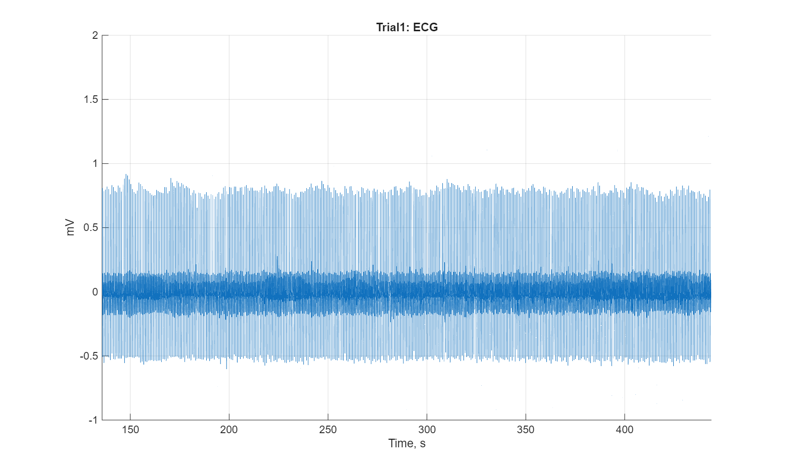
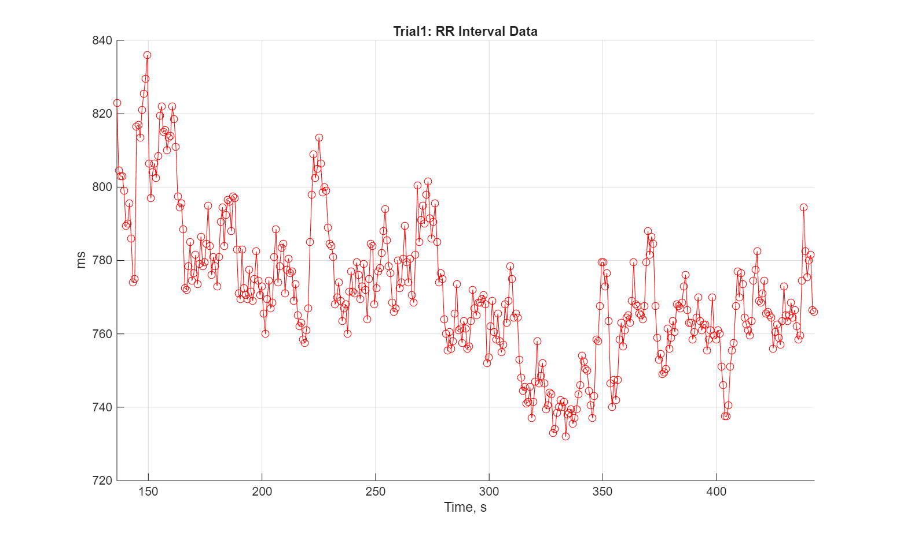
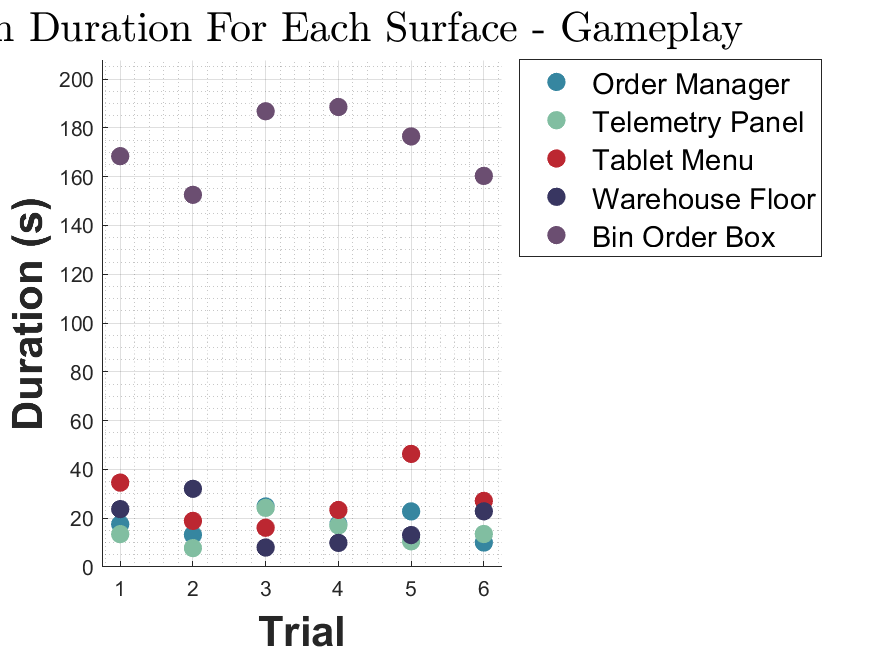
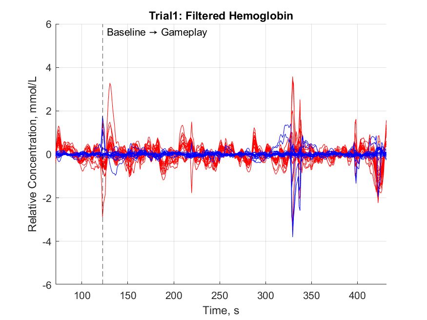
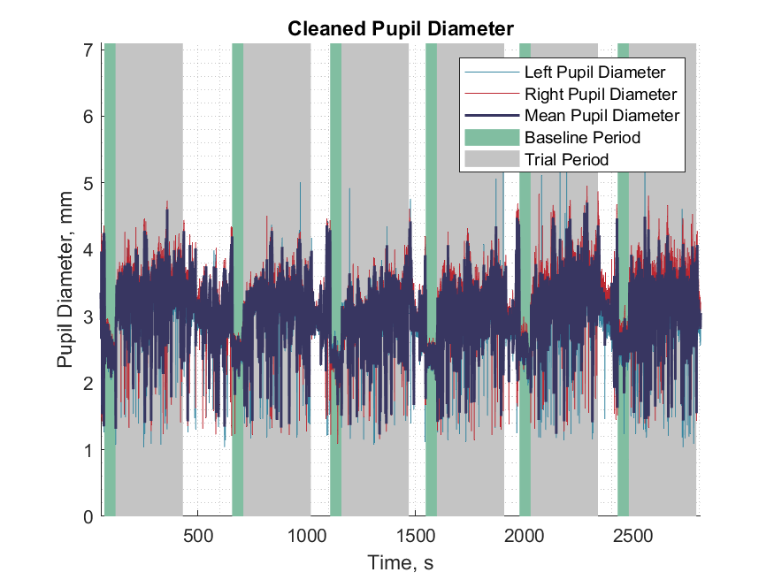

Full-Session EDA — Rest vs. Gameplay WindowsSkin-conductance across an entire session with the reconstructed 50-second rest baselines (green) and gameplay trials shaded. Rebuilding these windows when the marker was missing is what reclaimed seven WT01 sessions.

Per-Trial ECGCleaned ECG for a single trial. Every heartbeat is detected and turned into per-trial features — the raw material the initial-trust models are built from.

RR-Interval · Heart-Rate VariabilityBeat-to-beat intervals extracted from the ECG, the basis for heart-rate-variability features that track arousal and cognitive load during the task.

Eye-Tracking — Fixation by SurfaceGaze fixation duration on each interface surface (Order Manager, Telemetry Panel, Tablet Menu, Warehouse Floor, Bin) per trial — from the irregular-rate eye stream I fixed in the live viewer.

fNIRS — Filtered HemoglobinRelative oxy/deoxy-hemoglobin concentration across the baseline→gameplay transition, the brain-activity channel alongside the peripheral physiology.

Cleaned Pupil DiameterLeft, right, and mean pupil diameter cleaned across baseline and trial periods — a pupillometry channel derived from the same eye-tracking stream.
Undergraduate Researcher · Physiological Signal Processing
A SPUR research study on human-robot teaming (the CATAPULT / CAREER project) at CU Boulder. I own the physiological data pipeline: taking raw BIOPAC recordings — ECG (heart), EDA (skin conductance), and respiration — through cleaning, beat and skin-response detection, per-trial feature extraction, and plotting for every runnable session. This work is the front end of Aim 1: the features I pull are exactly what the team's initial-trust models are built from, so the cleaner and more complete the data, the better those models can be.
Ran the full BIOPAC pipeline (ECG/heartbeat, EDA/skin response, respiration) for every runnable session — WT01 S3–11, WT03 S1–4, WT04 S1–2 — cleaning signals, detecting each beat and response, extracting per-trial features, and generating the plot decks.
Rebuilt the pipeline to survive real data: when a session was missing its rest-period marker, reconstructed the 50-second rest baseline by counting back from gameplay onset — reclaiming seven WT01 sessions that would otherwise have been discarded.
Wrote dead-recording recovery scripts that realign a backup recording to rebuild signals when the live BIOPAC stream flat-lined (WT01 S11, WT03 S03), and proved the method trustworthy by rerunning it on a known-good session (WT04 S01) — rebuilt signals matched the original at r = 0.998 for respiration and heartbeats within ~15 ms.
Hardened the pipeline against crashes (empty streams, short recordings, the skin-response step) and built a standalone BIOPAC-only runner so a session can be re-processed quickly.
Rebuilt the lab's live multi-stream viewer to show every sensor at once and tracked down two separate bugs blocking eye-tracking (an irregular-rate stream) and fNIRS — it now flags a stream the moment it stops, freezes, or drops, so problems are caught during a session instead of after.
Screened every session for data quality, flagged and documented the unprocessable ones (the S02/S10/S12 errors) so bad data never gets analyzed as if it were valid — knowing when data is unusable is a result in itself.
Delivered the WT01/WT03/WT04 plot decks to SharePoint, passed my first formal Git code reviews, iterated the SPUR presentation through mentor feedback, and help run the Traveling Trunks STEM-education outreach.